Studio journal / Visual process
施工紀實，
直接看細節。
每一道工序，都有值得被看見的細節。從清潔手法到工具選擇，講究藏在每一次接觸之間。
一台車的好狀態，不只在最後一眼的光澤，也在每一步沒有省略的細節。
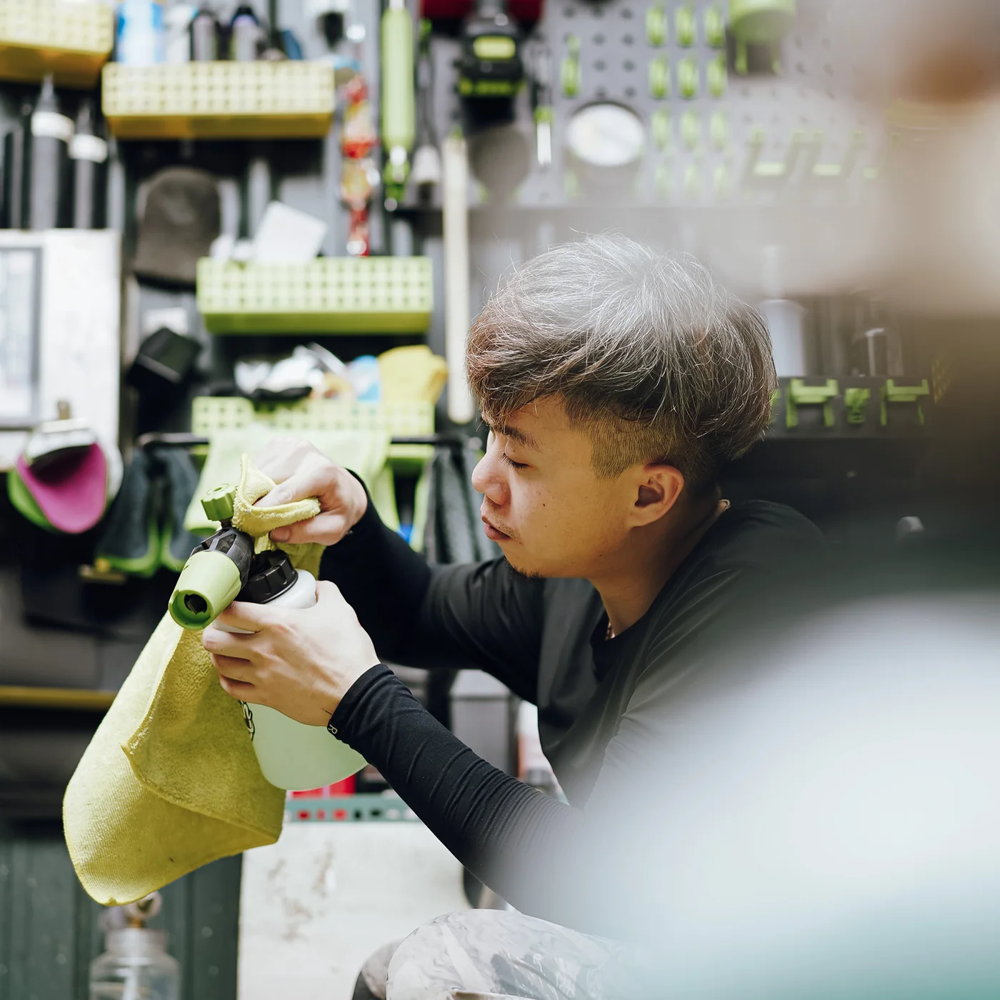
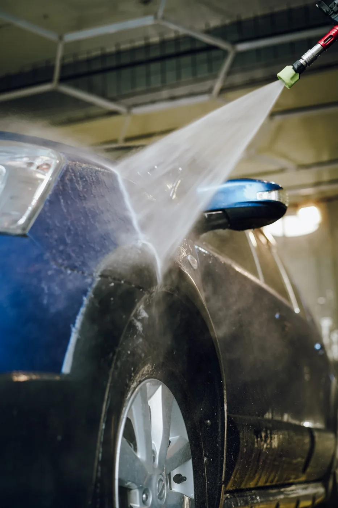
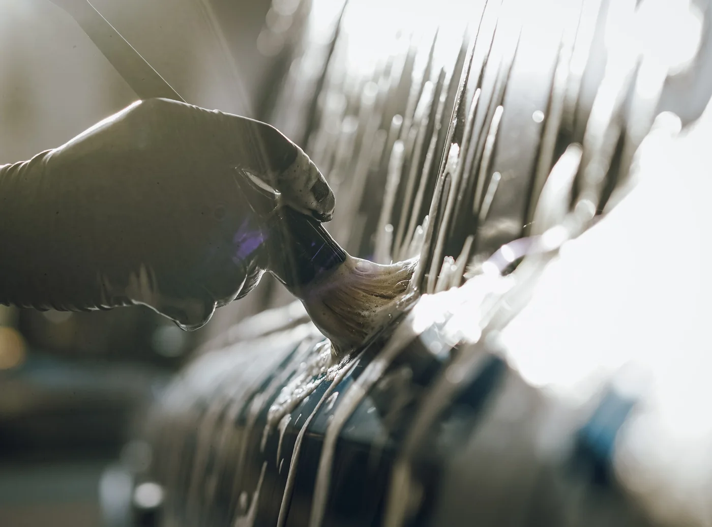
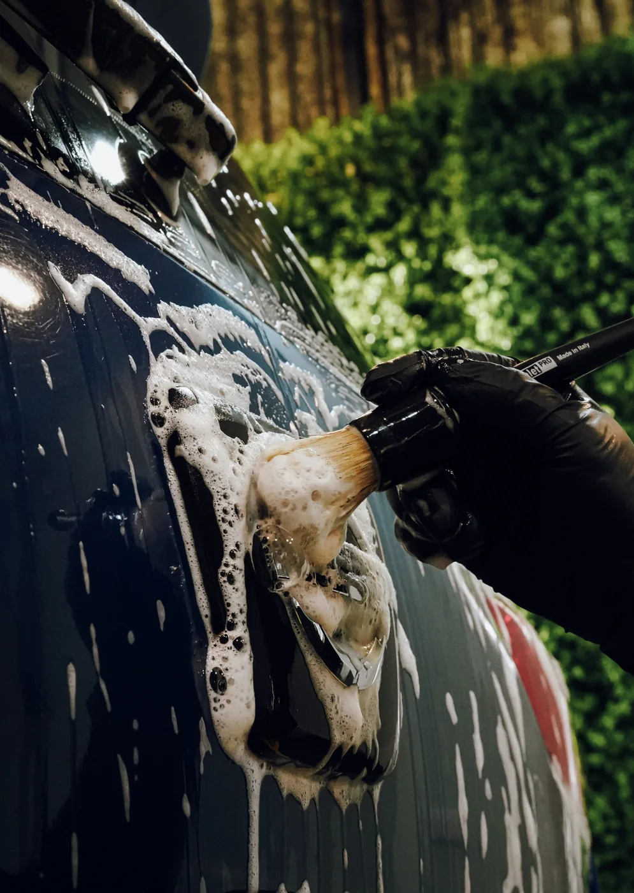
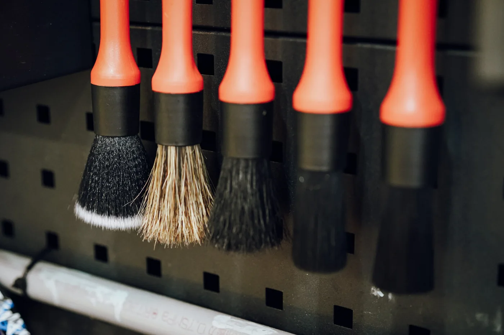
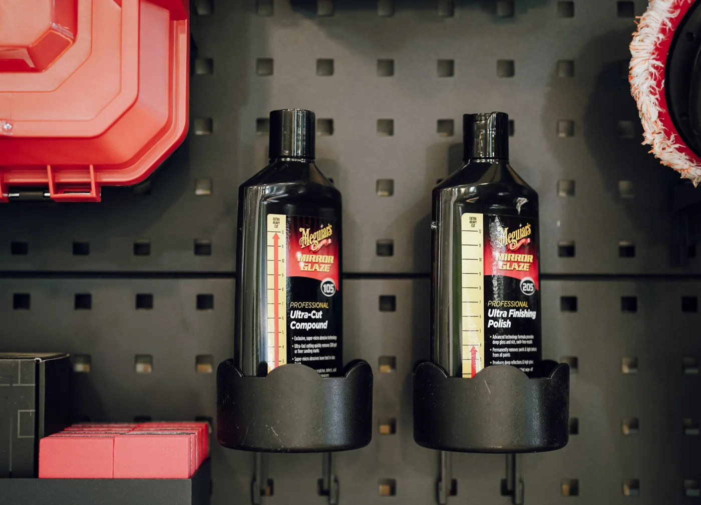
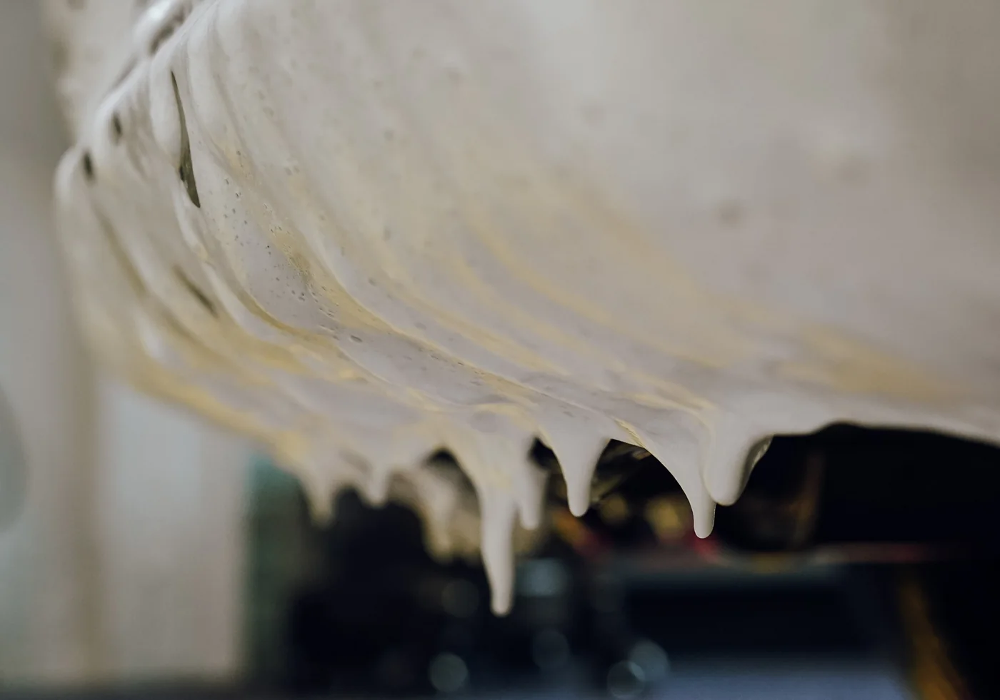
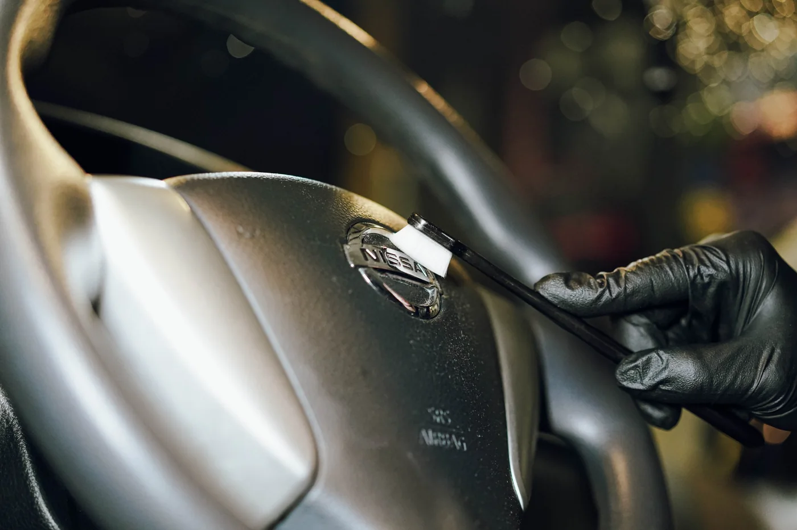
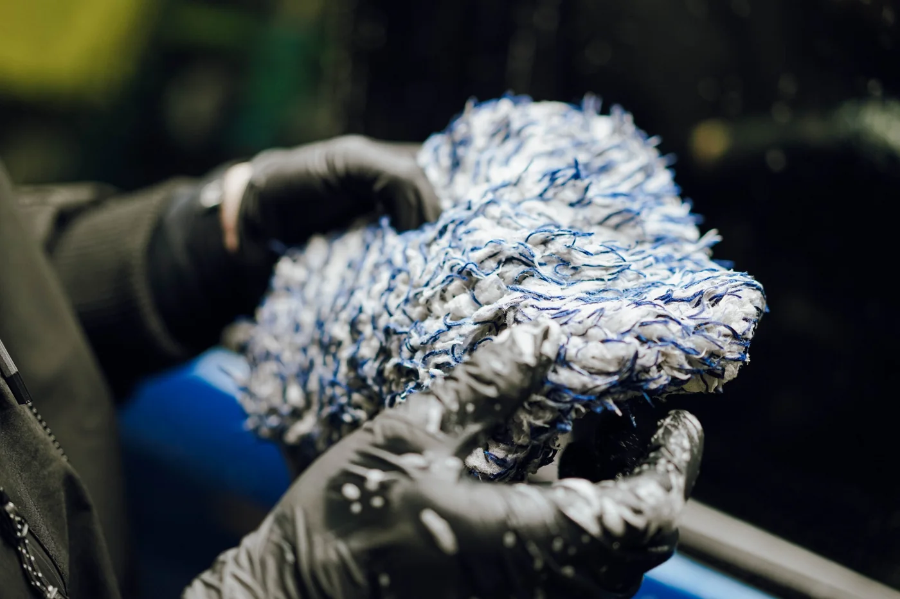
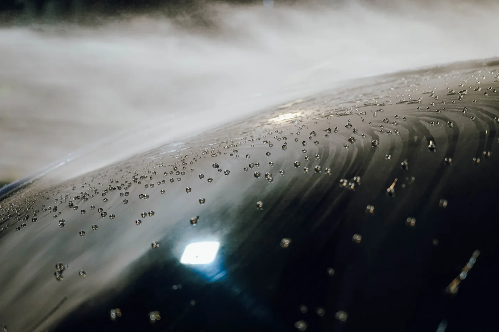
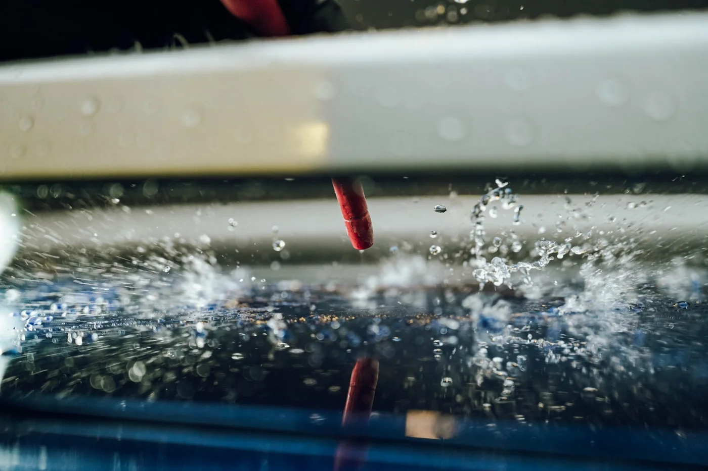
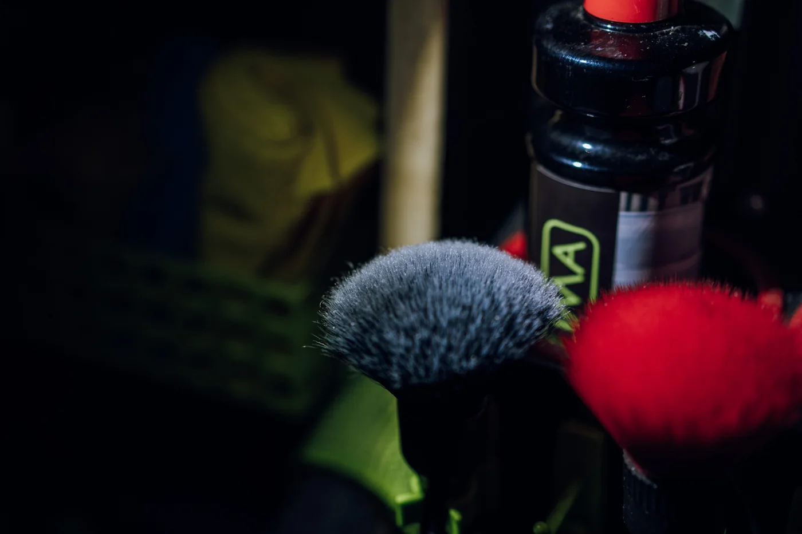
Want to know what fits your car?
魔鬼藏在細節，
比你更懂如何疼愛你的車。
如果你已經大致知道自己在意的細節，可以直接傳車型、停放環境與目前困擾到 LINE，我再依車況安排適合的施工方向。